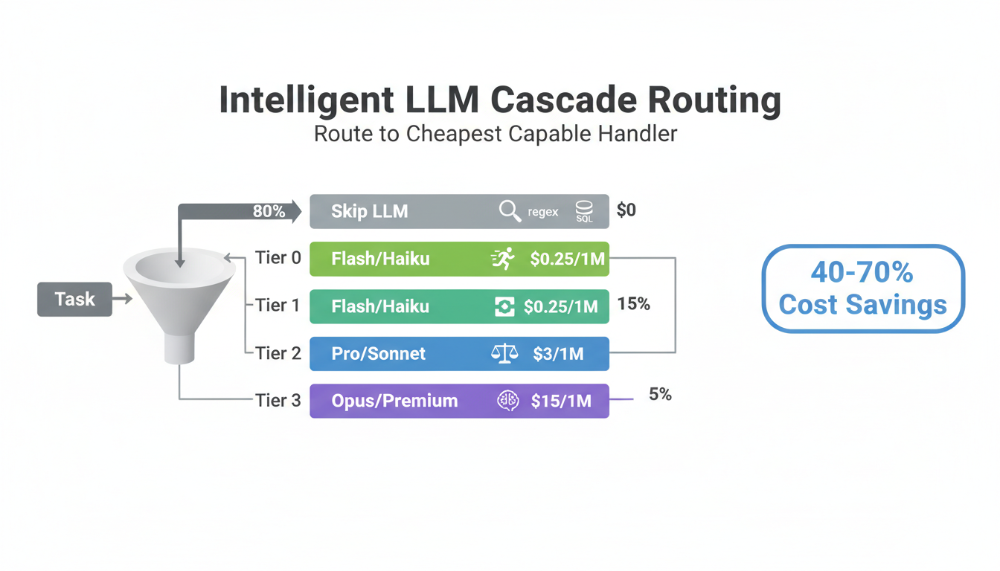
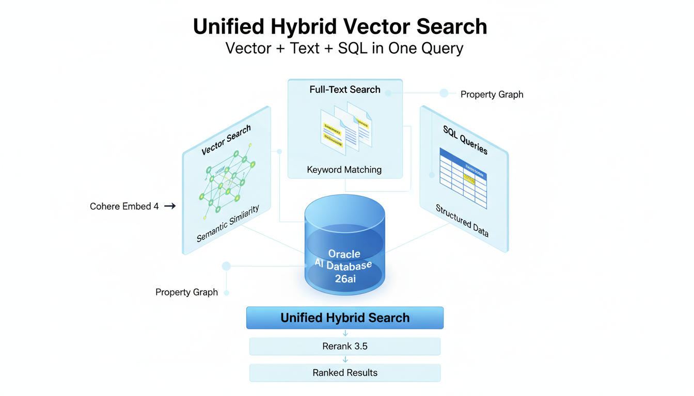
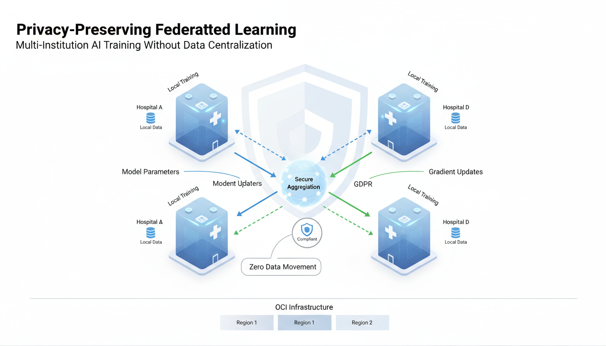
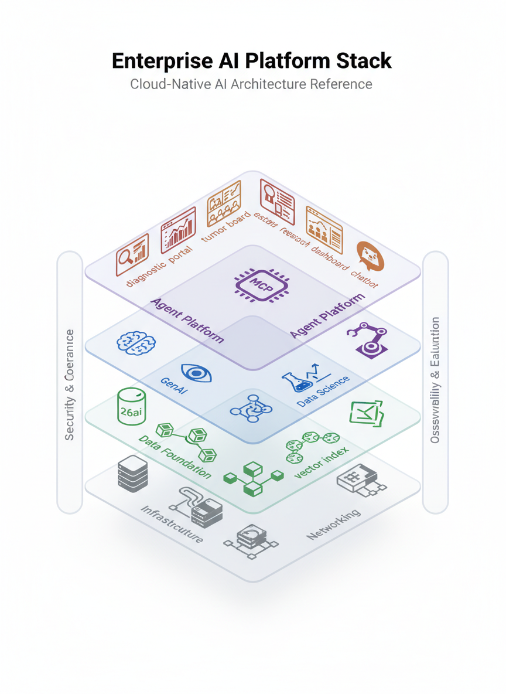

Enterprise AI Architecture Patterns
Production-grade patterns for building enterprise AI systems. From RAG pipelines to LLM cost optimization, vector search to federated learning—validated patterns from real enterprise engagements, enriched with cross-vendor research from Google, Anthropic, Oracle, BCG, and Gartner.
1. Production Enterprise RAG Architecture
Production RAG in 2026 has evolved far beyond simple retriever-generator pipelines. Leading organizations converge on a multi-layered architecture that treats evaluation, observability, guardrails, and governance as first-class components—not afterthoughts.
70% of RAG systems lack systematic evaluation, and 40-60% fail to reach production due to retrieval quality and governance gaps. The difference between a demo and production RAG is the layers you don't see: caching, evaluation loops, metadata filtering, and continuous quality monitoring.
The 8-Layer Production RAG Stack
| Layer | Function | Key Components |
|---|---|---|
| 1. Data Ingestion | Document intake and format normalization | OCI Object Storage, Functions, connectors for PDF/DOCX/HTML/API |
| 2. Chunking & Processing | Intelligent document splitting with metadata preservation | Semantic chunking, sliding window, parent-child relationships |
| 3. Embedding Generation | Convert chunks to vector representations | Cohere Embed 4 (multimodal: text + image), batch processing |
| 4. Vector Store | Indexed storage for fast similarity search | Oracle AI Database 26ai: HNSW/IVF indexes, metadata filtering |
| 5. Retrieval & Reranking | Find and rank relevant documents | Hybrid search (vector + text + SQL), Cohere Rerank 3.5 |
| 6. Prompt Construction | Assemble context-rich prompts | Dynamic template selection, context window management, guardrails |
| 7. LLM Generation | Generate responses with retrieved context | Cascade routing: Flash for simple, Pro for complex, with citations |
| 8. Evaluation & Feedback | Continuous quality measurement and improvement | Faithfulness, relevance, latency metrics; A/B testing; user feedback loops |
Google Vertex AI RAG Reference Pattern
Google's architecture separates ingestion and serving into independent subsystems with a managed RAG Engine providing mix-and-match components. Key insight: continuous index refresh cycles—daily for dynamic content, hourly for real-time—are critical for production quality.
Anthropic Production RAG Pattern
Anthropic advocates microservices architecture where document ingestion, vector retrieval, prompt construction, and response post-processing are independent services. This enables horizontal scaling of bottlenecks—document processing scales independently from retrieval, which scales independently from LLM interaction. Their multi-agent research system demonstrates retrieval across millions of documents with sub-second latency.
Oracle AI Database 26ai RAG Pattern
Oracle's unique advantage: converged database architecture where vector search, full-text search, property graph, JSON documents, and SQL all coexist in a single engine. This eliminates the data sprawl that plagues multi-service RAG architectures. AI Vector Search with HNSW/IVF indexes, combined with Select AI for natural language query, provides an integrated RAG foundation.
2. LLM Cascade Routing & Cost Optimization
The single biggest waste in enterprise AI is routing every task to the most expensive model. 80% of "AI tasks" don't need LLMs at all—regular expressions, SQL queries, and deterministic rules handle structured data better and cheaper.
The Four-Tier Routing Framework
| Tier | Handler | Cost | Use When | Traffic % |
|---|---|---|---|---|
| Tier 0: Skip LLM | Regex, SQL, JSON Schema, Python | $0 | Structured data, format validation, calculations, file search | ~40% |
| Tier 1: Lightweight | Gemini 2.5 Flash-Lite, Grok 3 Mini | ~$0.25/1M tokens | Summaries, formatting, translation, simple classification | ~35% |
| Tier 2: Balanced | Gemini 2.5 Pro, Cohere Command A | ~$1-3/1M tokens | Code generation, analysis, complex extraction, customer-facing | ~20% |
| Tier 3: Premium | Cohere Command A Reasoning, Grok 4 | ~$10-15/1M tokens | Novel architecture, complex legal/medical reasoning, strategy | ~5% |
Draft-Refine workflow: Use Flash for drafts 1-3 (cheap iterations), Pro for drafts 4-5 (quality improvement), Premium only for final polish. Savings: 60% vs. all-Premium workflow.
Never say "OCI is X times cheaper" as a blanket statement. Cost advantage depends on which model you compare, input vs. output pricing, use case, and volume. Always cite specific model comparisons with verified pricing from oracle.com/cloud/price-list.
Healthcare-Specific Routing Example
| Clinical Task | Recommended Model | Cost Tier | Rationale |
|---|---|---|---|
| Document/invoice extraction | OCI Document Understanding | ~$0.001/page | Purpose-built, no LLM needed |
| Patient report summarization | Gemini 2.5 Flash | ~$0.075/1M | Fast, sufficient quality for summaries |
| Literature search & retrieval | Cohere Command R (08-2024) | ~$0.10/1M | 128K context, RAG-optimized |
| Multi-document case analysis | Gemini 2.5 Pro | ~$1.50/1M | Complex multi-doc reasoning required |
| Drug repurposing analysis | Cohere Command A Reasoning | ~$3/1M | 256K context, multi-step logic |
3. Vector Search & Hybrid Query Patterns
Modern enterprise search requires combining multiple retrieval strategies. Oracle AI Database 26ai introduces Unified Hybrid Vector Search—the ability to combine vector similarity, full-text keyword matching, and structured SQL queries in a single database operation.
Three Search Modes, One Query
| Search Type | Best For | Technology | Example |
|---|---|---|---|
| Vector Search | Semantic similarity, concept matching | HNSW/IVF indexes, Cohere Embed 4 | "Find cases similar to this patient profile" |
| Full-Text Search | Exact terms, keywords, identifiers | Oracle Text, inverted indexes | "Find all documents mentioning 'FLT3-ITD mutation'" |
| SQL Queries | Structured filtering, aggregation | Standard SQL, JSON Duality Views | "Patients diagnosed after 2020 with WBC > 100K" |
Property Graph for Relationship Discovery
Beyond flat search, Oracle AI Database 26ai Property Graph enables relationship-aware retrieval. In healthcare: patient-gene-drug-outcome relationships. In enterprise: document-author-department-topic graphs. Combined with vector search, this enables Graph RAG—retrieval that follows entity relationships to find contextually relevant information that pure vector similarity would miss.
Multimodal Embeddings
Cohere Embed 4 supports multimodal embeddings—unified vector representations for both text and images. This enables cross-modal search: query with text, retrieve relevant images (and vice versa). Critical for domains with visual data: medical imaging, engineering diagrams, architectural blueprints.
4. Federated Learning for Regulated Industries
In regulated industries—healthcare, financial services, government—data cannot leave institutional boundaries. Federated learning solves this by training AI models across distributed institutions without centralizing sensitive data.
How It Works
- Central server distributes model parameters to participating institutions
- Each institution trains locally on their private data (data never leaves)
- Only gradient updates are sent back to the central server (not raw data)
- Server aggregates gradients and updates the global model
- Cycle repeats until convergence—resulting model benefits from all data without anyone sharing it
OCI Implementation: SymetryML
SymetryML on OCI provides production federated learning with dynamic governance modeling that protects against data leakage, eliminating the need for identical dataset distributions across federation peers. Supports NVIDIA GPU instances with OCI Streaming for data ingestion.
For rare disease research, data is scattered across dozens of institutions, each with small datasets. No single institution has enough data for robust AI training. Federated learning enables collective intelligence without collective data—each institution contributes to model quality while maintaining full data sovereignty and GDPR/HIPAA compliance.
Compliance Architecture
| Requirement | Federated Learning Solution | OCI Service |
|---|---|---|
| GDPR Data Residency | Data never leaves institution | OCI Sovereign Cloud regions |
| HIPAA PHI Protection | No PHI in transit | OCI Data Safe + encryption |
| Audit Trail | Logged gradient updates | OCI Audit + Logging |
| Access Control | Institution-level RBAC | OCI IAM + compartments |
5. Enterprise AI Platform Stack
A production enterprise AI platform is not a single service—it's a coordinated stack spanning infrastructure through applications, with security and observability as cross-cutting concerns.
Five-Layer Reference Architecture
| Layer | Purpose | Key Services |
|---|---|---|
| 5. Applications | User-facing AI experiences | APEX portals, ODA chatbots, OAC dashboards, custom APIs |
| 4. Agent Platform | Multi-agent orchestration and tooling | Private Agent Factory, MCP, Select AI Agent, OCI GenAI Agents |
| 3. AI Services | Model inference, training, embeddings | OCI GenAI, OCI Vision, OCI Data Science, Cohere/Llama/Gemini |
| 2. Data Foundation | Converged data management | Oracle AI Database 26ai (Vector + Graph + JSON + SQL), ADW |
| 1. Infrastructure | Compute, storage, networking | OKE, A100/H100 GPU, Object Storage, FastConnect |
Cross-Cutting Concerns
- Security & Governance (spanning all layers): OCI Data Safe, Vault, IAM/IDCS, RBAC, encryption at rest + transit
- Observability & Evaluation (spanning all layers): Prometheus, Grafana, OCI Monitoring, model quality metrics, A/B testing
- Compliance: HIPAA, GDPR, HITRUST (71 OCI services certified), SOC 2, ISO 27001
Decision Framework: Choosing the Right Pattern
Sources & References
- OCI Pretrained Models Documentation - Complete model catalog
- Oracle Cloud Price List - Current pricing
- Google Vertex AI RAG Architecture - RAG reference
- Anthropic Multi-Agent Research System - Production RAG patterns
- SymetryML on OCI - Federated learning
- OCI AI Blueprints - Production GenAI deployment
- Oracle AI Database 26ai - Database documentation
- OCI HITRUST Certification - Compliance
- Oracle Technology Engineering - Solution patterns
- BCG: Agents Accelerate AI Value - DRI Framework